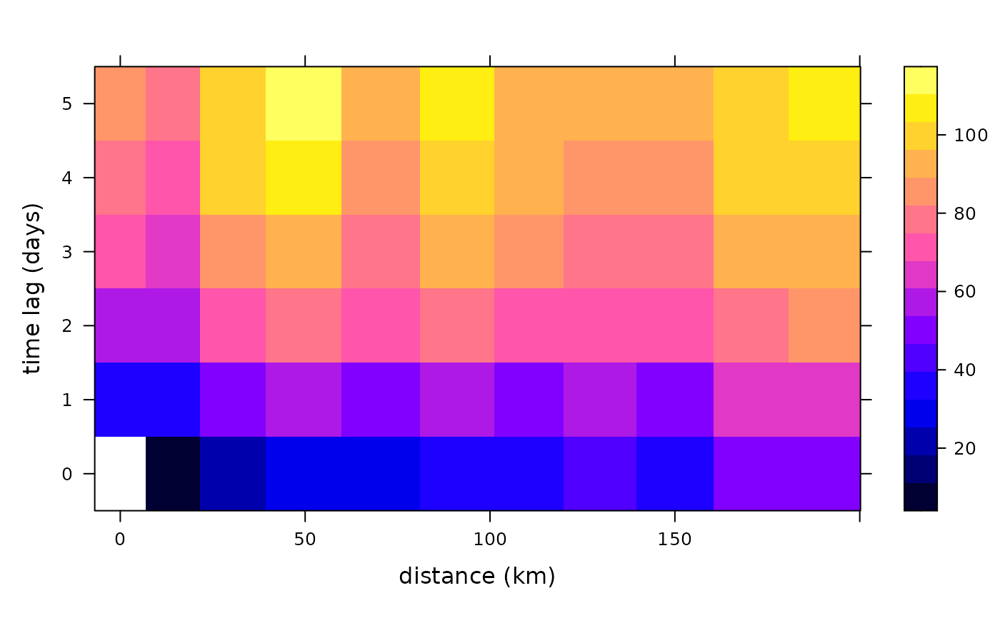

Calculate Spatio-Temporal Sample Variogram
variogramST.RdCalculates the sample variogram from spatio-temporal data.
Usage
variogramST(formula, locations, data, ..., tlags = 0:15, cutoff,
width = cutoff/15, boundaries = seq(0, cutoff, width),
progress = interactive(), pseudo = TRUE, assumeRegular = FALSE,
na.omit = FALSE, cores = 1)Arguments
- formula
formula, specifying the dependent variable.
- locations
A STFDF or STSDF containing the variable; kept for compatibility reasons with variogram, either
locationsordatamust be provided.- data
- ...
any other arguments that will be passed to the underlying
variogramfunction. In case of using data of typeSTIDF, the argumenttunitis recommended (and only used in the case of STIDF) to set the temporal unit of thetlags. Additionally,twindowcan be passed to control the temporal window used for temporal distance calculations. This builds on the property of xts being ordered and only the nexttwindowinstances are considered. This avoids the need of huge temporal distance matrices. The default uses twice the number as the average difference goes into the temporal cutoff.- tlags
integer; time lags to consider or in case
datais of classSTIDFthe actual temporal boundaries with time unit given bytunitotherwise the same unit asdiffon the index of the time slot will generate is assumed.- cutoff
spatial separation distance up to which point pairs are included in semivariance estimates; as a default, the length of the diagonal of the box spanning the data is divided by three.
- width
the width of subsequent distance intervals into which data point pairs are grouped for semivariance estimates, by default the
cutoffis divided into 15 equal lags.- boundaries
numerical vector with distance interval upper boundaries; values should be strictly increasing
- progress
logical; if TRUE, show text progress bar
- pseudo
integer; use pseudo cross variogram for computing time-lagged spatial variograms? -1: find out from coordinates – if they are equal then yes, else no; 0: no; 1: yes.
- assumeRegular
logical; whether the time series should be assumed regular. The first time step is assumed to be representative for the whole series. Note, that temporal lags are considered by index, and no check is made whether pairs actually have the desired separating distance.
- na.omit
shall all
NAvalues in the spatio-temporal variogram be dropped? In case where complete rows or columns in the variogram consists ofNAonly,plotmight produce a distorted picture.- cores
number of cores to use in parallel
Value
The spatio-temporal sample variogram contains besides the fields
np, dist and gamma the spatio-temporal fields,
timelag, spacelag and avgDist, the first of which indicates the time lag
used, the second and third different spatial lags. spacelag is the midpoint in the spatial
lag intervals as passed by the parameter boundaries, whereas avgDist is the average
distance between the point pairs found in a distance interval over all temporal lags (i.e. the
averages of the values dist per temporal lag.) To compute variograms for space lag \(h\) and
time lag \(t\), the pseudo cross variogram \((Z_i(s)-Z_{i+t}(s+h))^2\) is averaged over all time
lagged observation sets \(Z_i\) and \(Z_{i+t}\) available (weighted by the number of pairs involved).
References
Cressie, N.A.C., 1993, Statistics for Spatial Data, Wiley.
Cressie, N., C. Wikle, 2011, Statistics for Spatio-temporal Data, Wiley.
Pebesma, E.J., 2004. Multivariable geostatistics in S: the gstat package. Computers and Geosciences, 30: 683-691.
See also
plot.StVariogram,
for variogram models: vgmST,
to fit a spatio-temporal variogram model to a spatio-temporal sample variogram:
fit.StVariogram
Examples
# The following spatio-temporal variogram has been calcualted through
# vv = variogram(PM10~1, r5to10, width=20, cutoff = 200, tlags=0:5)
# in the vignette "st".
data(vv)
str(vv)
#> Classes ‘StVariogram’ and 'data.frame': 66 obs. of 7 variables:
#> $ np : num 0 3456 16554 21257 33547 ...
#> $ dist : num NA 13.8 29.5 49.1 70.4 ...
#> $ gamma : num NA 11 23.4 29.6 31.2 ...
#> $ id : chr "lag0" "lag0" "lag0" "lag0" ...
#> $ timelag : num 0 0 0 0 0 0 0 0 0 0 ...
#> ..- attr(*, "units")= chr "days"
#> $ spacelag: num 0 10 30 50 70 90 110 130 150 170 ...
#> ..- attr(*, "units")= chr "km"
#> $ avgDist : num 0 13.8 29.5 49.1 70.4 ...
#> - attr(*, "boundaries")= num [1:11] 0 20 40 60 80 100 120 140 160 180 ...
plot(vv)
